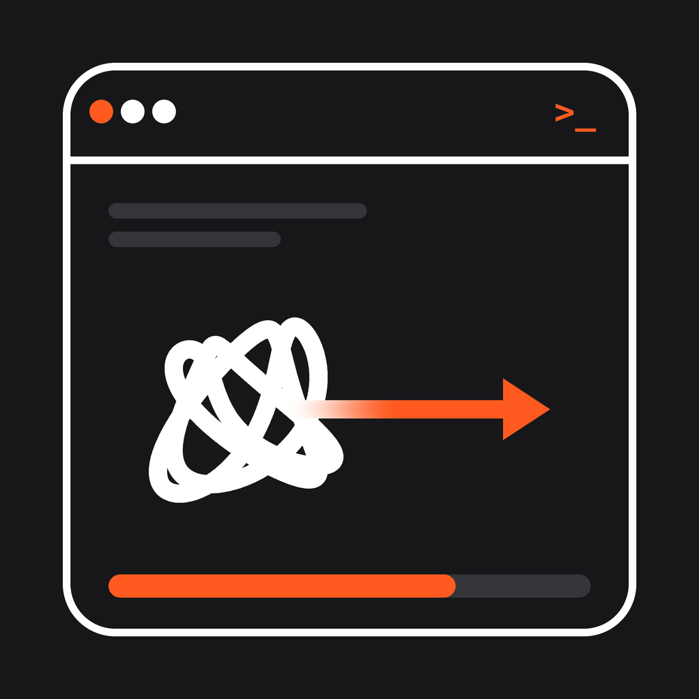

JonTech Solutions为中小企业与初创公司打造
自动化系统，让 AI 真正派上用场。
SKU A-1024
不超卖，不用逐个平台改库存
前台少排队，收据自动打印
不用再靠 Excel 一笔一笔对佣金
谁付了、谁还没付，一眼看清
不用再追着同事要数字
顾客不用等，你也不用守着手机
已服务行业：房地产 · 零售 · 教育 · 美容 · 科技
AI 一分钟内给出评分和改进建议，免费、无需注册。
自动化 · AI · 定制系统 · 马来西亚
jontech-solutions.com